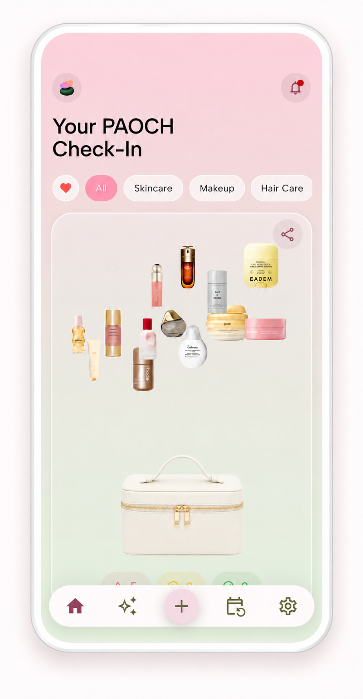
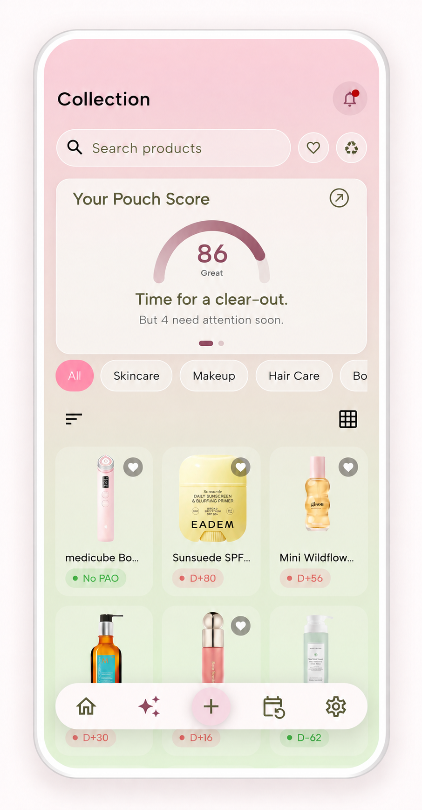
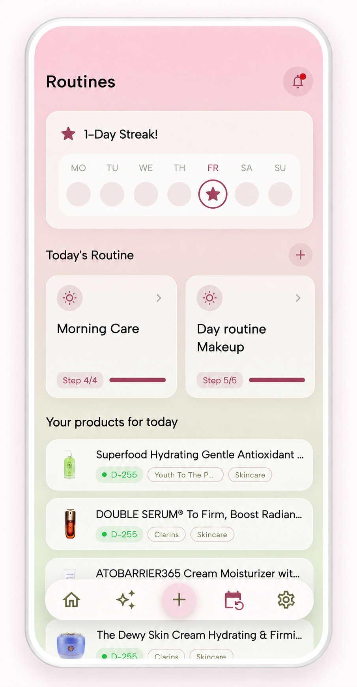
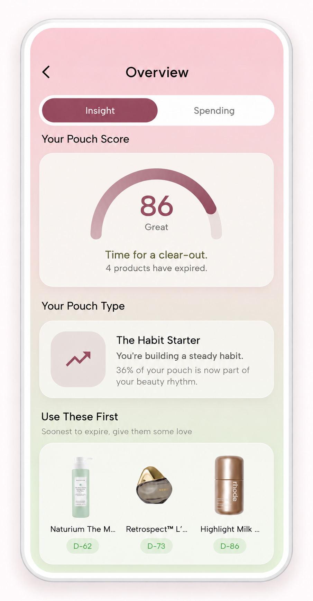
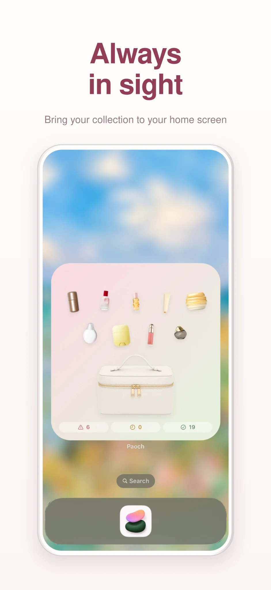
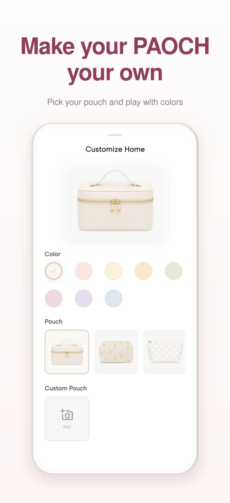
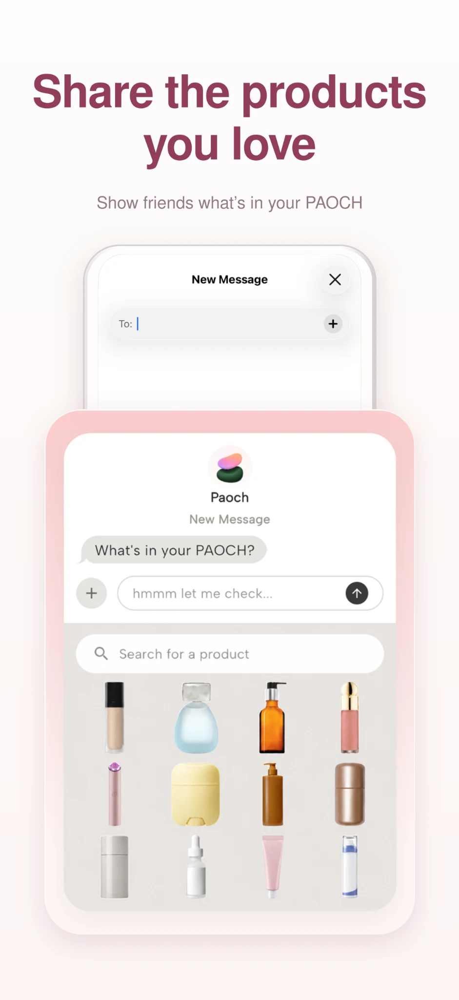
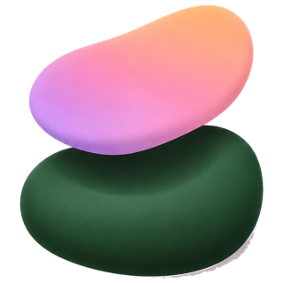

01
Freshness at a glance
Track makeup and skincare opening dates and PAO (period after opening) timelines. See what is fresh, what is expiring soon, and what to use first.
Your beauty shelf, in your pocket
PAOCH is a beauty expiry tracker for makeup and skincare. Track opening dates, get PAO-based expiry reminders, and organize your beauty collection and routines.
Designed around real routines
From the first scan to the last pump, Paoch keeps the useful details close and the experience delightfully simple.




From first use to finish
Track makeup and skincare opening dates and PAO (period after opening) timelines. See what is fresh, what is expiring soon, and what to use first.
Browse by category, brand, status, or favorites without digging through drawers.
Plan everyday routines and special care rituals with your products, masks, and beauty devices all in one place.
Finish a product, rate the experience, and keep a useful memory of what earned another spot in your pouch.
The little details make it yours
Keep it in sight. Make it yours. Share a little love.



12M = 12 months after opening
A quick beauty note
Seen a tiny open jar with 6M, 12M or 24M on your makeup or skincare? That's the period after opening (PAO): the manufacturer's recommended time to use the product after opening it.
PAOCH connects that timeline to the date you opened your product, so you can keep track without keeping it all in your head.
PAO differs from a printed expiry date. Follow the product label and manufacturer's guidance. A date tracker cannot determine a product's condition or safety.
A few things you might wonder
Opening dates, PAO and all the little details in between.
A beauty expiry tracker helps you record when you opened your makeup and skincare, track each product's period after opening (PAO) and get reminders as the recorded date approaches. PAOCH brings those records together with your beauty collection and routines.
Yes. PAOCH keeps makeup, skincare and other beauty products in one collection. You can add products with a photo, supported barcode or manual entry, then keep their opening dates and product details close.
No. PAO refers to the recommended period after opening for applicable products. A printed expiry or best-before date is a separate instruction. Always follow the product's labeling and manufacturer guidance.
Check its packaging and the manufacturer's guidance. You can enter product details manually in PAOCH, using the guidance for that specific product. Avoid assuming all beauty products have the same usable period.
Yes. Organize morning, evening and custom beauty routines, check off your steps and bring your collection to your Home Screen with widgets. Some features and widget sizes require PAOCH Pro.
Yes. You can find PAOCH on the App Store for iPhone and iPad. The App Store listing shows current device requirements and availability for your region.
PAOCH for Android is currently in testing and is expected to launch soon.

Made for all beauty lovers
Download Paoch and give your beauty collection a home.
Download on the App Store